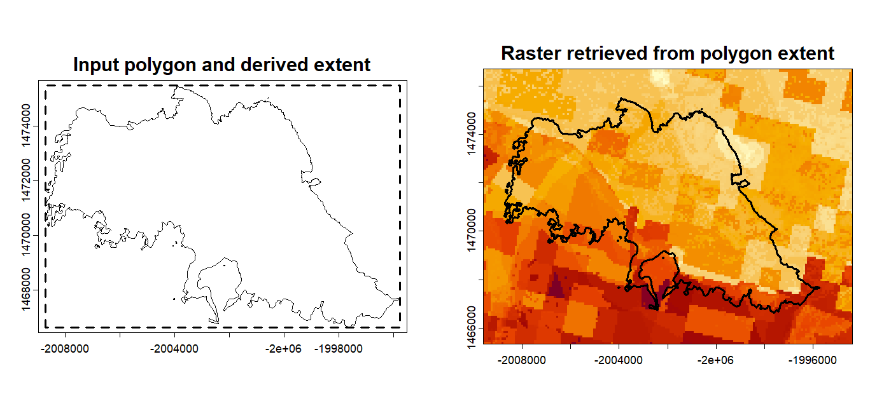

Using Spatial Objects as Areas of Interest
Source:vignettes/spatial-objects-aoi.Rmd
spatial-objects-aoi.RmdThis vignette shows how to pass a spatial object directly to
get_layer() as the area of interest. This is useful when
users already have a study boundary, such as a shapefile, GeoJSON file,
sf object, or terra object, and do not want to manually enter
bounding-box coordinates.
For spatial objects, get_layer() reads the object’s
coordinate reference system, derives its extent, and retrieves the
overlapping COG tiles. The returned raster is cropped to the
area-of-interest extent. It is not masked to the exact polygon boundary.
Users who need exact polygon clipping can apply
terra::mask() after retrieval.
Accepted Input Types
get_layer() accepts several area-of-interest input
types, including numeric bounding boxes, spatial files, sf objects, and
terra objects. Inputs without stored coordinate reference system
information, such as numeric bounding boxes and SpatExtent
objects, require aoi_crs.
Example: Shapefile Path
Pass the file path as a character string. For a shapefile, the
coordinate reference system is read from the .prj sidecar
file, so aoi_crs is not needed.
shp <- system.file(
"demos/data/Eaton_Perimeter_20250121.shp",
package = "firex"
)
wri_eaton <- get_layer("WRI_score", aoi = shp)
wri_eaton
#> class : SpatRaster
#> dimensions : 193, 256, 1 (nrow, ncol, nlyr)
#> resolution : 90, 90 (x, y)
#> coord. ref. : NAD83 / Conus Albers (EPSG:5070)The returned raster covers the extent of the Eaton Fire perimeter. This avoids manually entering coordinates while keeping the result compatible with terra workflows.
Example: sf Object
eaton <- sf::st_read(shp, quiet = TRUE)
wri_sf <- get_layer("WRI_score", aoi = eaton)
# The shapefile path and sf object define the same area of interest.
all.equal(terra::ext(wri_eaton), terra::ext(wri_sf))
#> [1] TRUEThis shows that users can choose the input format that best matches their workflow. The package handles the spatial object and derives the retrieval extent internally.
Example: SpatExtent
A terra::SpatExtent stores only the bounding
coordinates, not the coordinate reference system. Because of this,
aoi_crs must be supplied explicitly.
eaton_v <- terra::vect(shp)
eaton_crs <- terra::crs(eaton_v)
eaton_ext <- terra::ext(eaton_v)
wri_ext <- get_layer(
"WRI_score",
aoi = eaton_ext,
aoi_crs = eaton_crs
)
Figure 5. Polygon-based area-of-interest input. Left: the Eaton Fire perimeter and the bounding extent derived from that geometry. Right: get_layer() retrieves the WRI_score raster over that extent, with the original perimeter overlaid for context.
The figure is generated from the reproducible script
inst/figures/fig5_bbox_vs_polygon.R.